5-Minuten-Tour
Zeichnen Sie ausgehend von einem leeren Dokument ein Nassi-Shneiderman-Diagramm (Struktogramm), das die Elemente eines Arrays summiert und den Mittelwert bildet. Dafür genügt allein die Tastatur oder allein die Maus. In den Tastentabellen steht links die Vim-Taste, rechts die Standardtaste und die Maus. Nehmen Sie, was Ihnen besser in der Hand liegt.
Derselbe Heapsort, einmal nur mit Tasten und einmal nur mit der Maus gezeichnet. Zum Nachvollziehen in Textform lesen Sie die Tour unten; alle Tasten finden Sie unter Alle Tastenkombinationen.
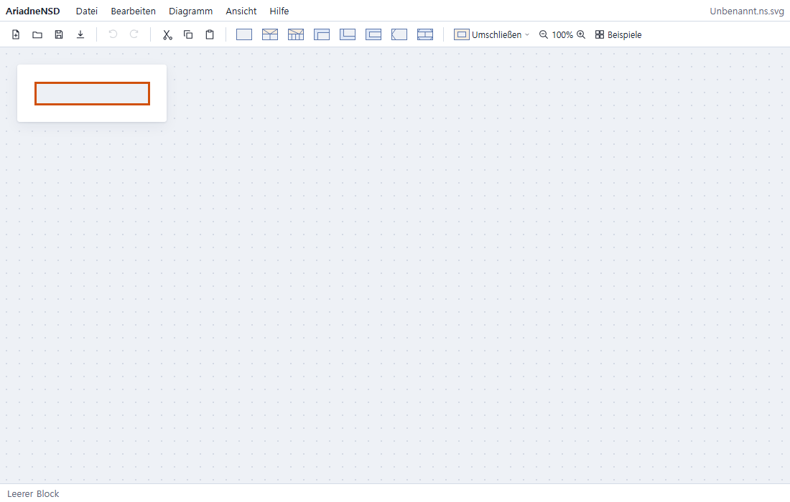
Wenn Sie die App öffnen, sehen Sie ein neues Dokument, in dem ein leerer Block ausgewählt ist. Oben befinden sich die Menüs und die Symbolleiste; die Statusleiste unten zeigt, was ausgewählt ist.
1Den ersten Block schreiben
Um Text in den ausgewählten Block zu schreiben, drücken Sie Enter und beginnen damit die Bearbeitung. Wenn Sie fertig sind, drücken Sie erneut Enter, um die Bearbeitung zu beenden. Auch Esc beendet die Bearbeitung.
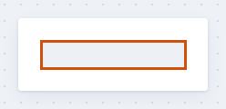
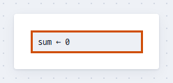
sum ← 0| Aktion | Vim-Taste | Standardtaste · Maus |
|---|---|---|
| Bearbeitung beginnen | i (Cursor am Anfang), cc (leeren und neu schreiben) | Enter, F2, Doppelklick |
| Bearbeitung beenden | Esc | Enter |
| Neue Zeile innerhalb eines Blocks | Shift+Enter |
Solange ein Block ausgewählt ist, sind Buchstabentasten Befehle und kein Text (wie in Vim). Beginnen Sie zuerst die Bearbeitung, um zu schreiben.
2Weitere Blöcke einfügen
Ein neuer Block wird direkt unter dem ausgewählten eingefügt. Beim Einfügen einer
Anweisung beginnt die Bearbeitung sofort, Sie können also gleich tippen, ohne vorher
Enter zu drücken. Nachdem Sie den Text geschrieben und
Enter gedrückt haben, bleibt der Block ausgewählt; fügen Sie also einfach
erneut ein, um den nächsten zu schreiben. Schreiben Sie auf diese Weise
i ← 0, sum ← sum + a[i] und i ← i + 1. Halten Sie
Shift (Umschalt) gedrückt, um stattdessen darüber einzufügen.
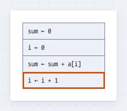
| Aktion | Vim-Taste | Standardtaste · Maus |
|---|---|---|
| Anweisung darunter / darüber einfügen und schreiben | o (oder a p) / O (oder A p) | Das Anweisungssymbol in der Symbolleiste / Shift+Klick |
| Zwischen Blöcken wechseln | j k | ↓ ↑, Klick |
3Mit While-Schleife umschließen
Setzen Sie die letzten beiden Blöcke, sum ← sum + a[i] und
i ← i + 1, in eine Schleife.
-
Beide Blöcke auswählen. Während
i ← i + 1(der gerade geschriebene Block) ausgewählt ist, drücken Sie einmal Shift+↑: Der Block darüber kommt zur Auswahl hinzu, und der orangefarbene Rahmen umfasst beide. Mit der Maus klicken Sie aufsum ← sum + a[i]und dann mit Shift+Klick aufi ← i + 1. - Mit While-Schleife umschließen. Drücken Sie s und dann w. Mit der Maus klicken Sie mit Ctrl+Klick (Strg) auf das Symbol der While-Schleife in der Symbolleiste.
-
Die Schleifenbedingung schreiben. Die Bearbeitung beginnt sofort in der
Bedingungszelle der While-Schleife: Schreiben Sie
i < nund drücken Sie Enter.
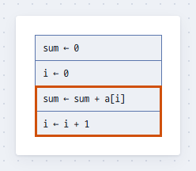
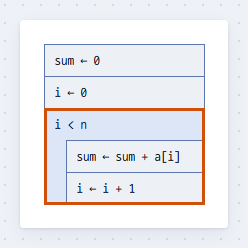
Dasselbe auf dem ganzen Bildschirm. Warten Sie nach s einen Moment: Direkt unter der Auswahl erscheint ein Hinweis auf die nächsten Tasten.
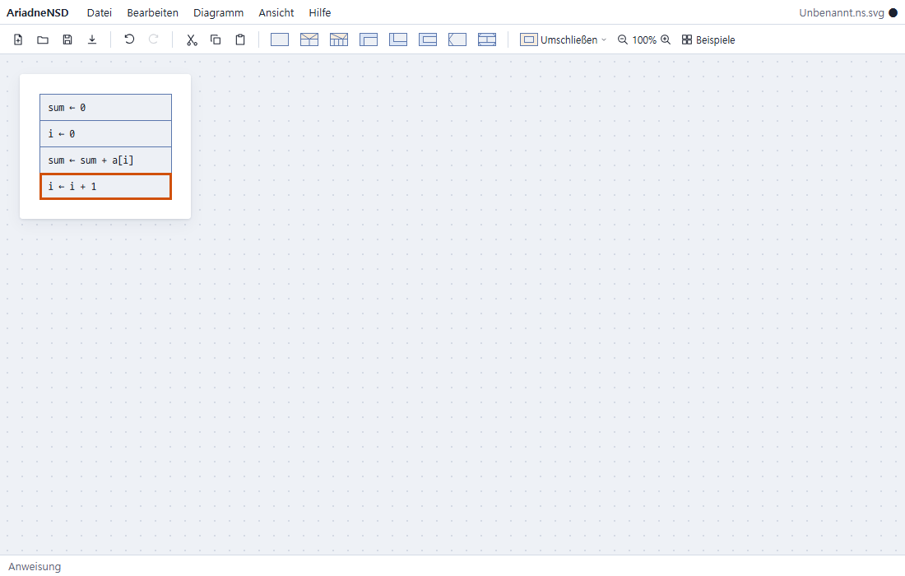
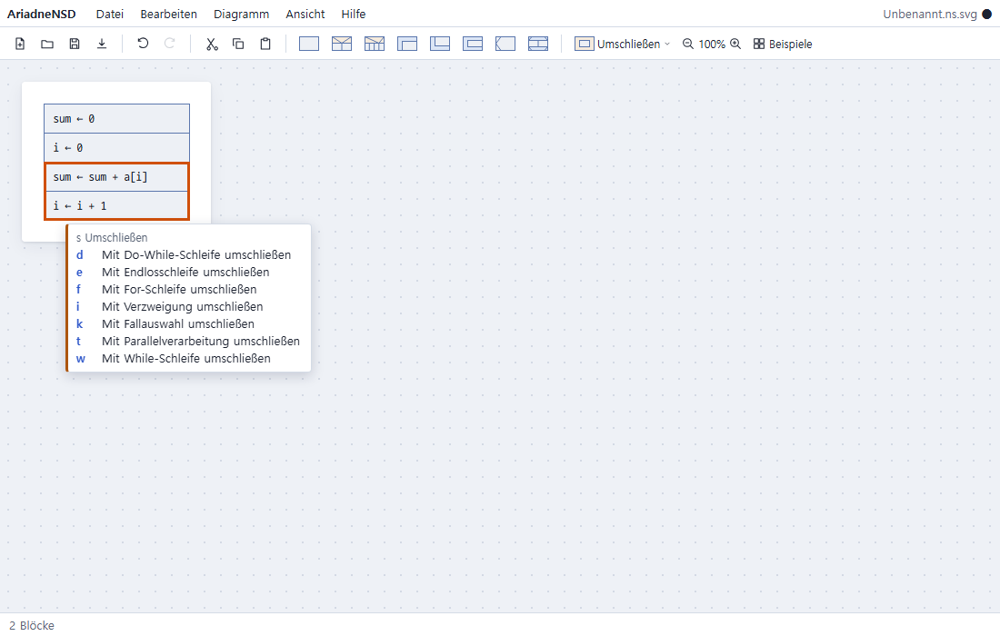
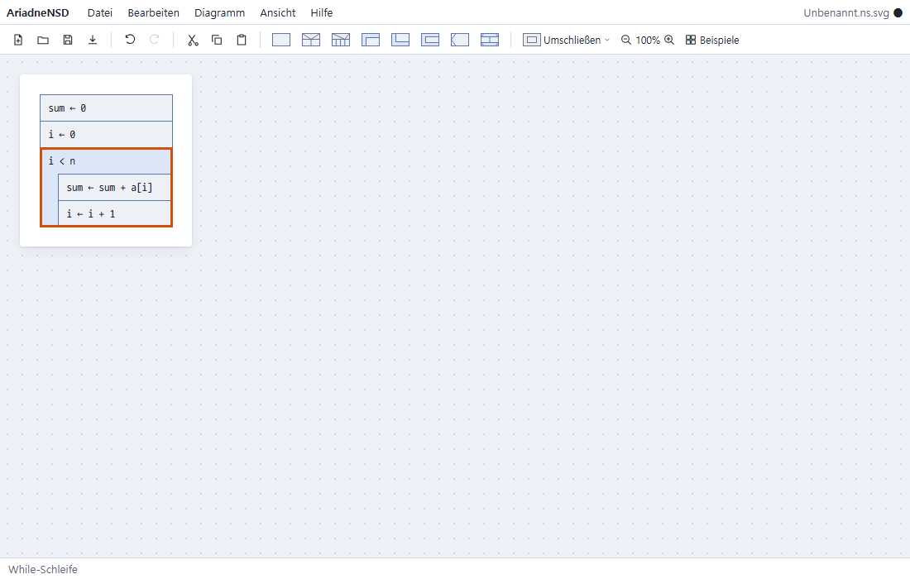
| Aktion | Vim-Taste | Standardtaste · Maus |
|---|---|---|
| Mehrere Blöcke auswählen | V, dann j k | Shift+↑ ↓, Shift+Klick |
| Mit While-Schleife umschließen | s w | Ctrl+Klick auf das Symbol der While-Schleife in der Symbolleiste, „Umschließen“ in der Symbolleiste oder das Symbol per Drag-and-drop auf die Blöcke ziehen |
| Mit einer anderen Art umschließen | s + i Verzweigung · k Fallauswahl · d Do-While-Schleife · f For-Schleife · e Endlosschleife · t Parallelverarbeitung | Ebenso, mit dem jeweiligen Symbol |
| Umschließung aufheben | ds | Das Kontextmenü (Rechtsklick) |
Bei Befehlen aus zwei Tasten drücken Sie die erste Taste und warten einen Moment: Die Tasten, die Sie als Nächstes drücken können, erscheinen direkt unter dem ausgewählten Block. Auswendig lernen müssen Sie sie also nicht.
4Eine Verzweigung einfügen
Fügen Sie nach der Schleife eine Verzweigung ein und schreiben Sie die Bedingung in ihre
Bedingungszelle. Gehen Sie dann hinunter in den leeren Block des ja-Zweigs und schreiben
Sie den Mittelwert. Das ∅ im nein-Zweig bedeutet „hier steht nichts“.
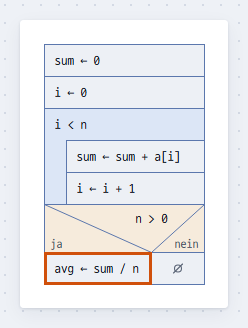
n > 0, der Mittelwert im ja-Zweig| Aktion | Vim-Taste | Standardtaste · Maus |
|---|---|---|
| Verzweigung darunter / darüber einfügen | a i / A i | Das Symbol der Verzweigung in der Symbolleiste / Shift+Klick |
| Andere Blöcke einfügen | a + k Fallauswahl · w While-Schleife · d Do-While-Schleife · f For-Schleife · e Endlosschleife · x Aussprung · t Parallelverarbeitung · c Aufruf | Das jeweilige Symbol in der Symbolleiste |
| In einen Zweig / zum nächsten Zweig | j / l h | ↓ / → ←, Klick |
5Speichern
Beim Speichern entsteht eine .ns.svg-Datei. Die Datei ist selbst ein Bild:
Browser, GitHub und Dokumente zeigen sie unverändert an, und AriadneNSD öffnet sie
wieder zum Bearbeiten.
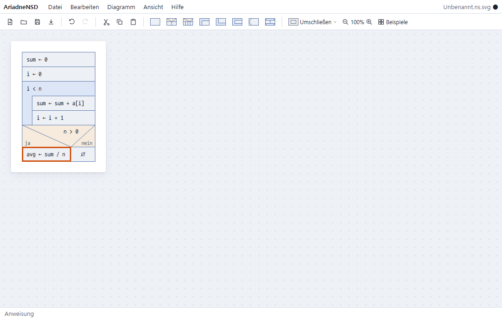
Der Punkt (●) neben dem Dateinamen oben rechts bedeutet, dass es nicht
gespeicherte Änderungen gibt.
| Aktion | Vim-Taste | Standardtaste · Maus |
|---|---|---|
| Speichern / Speichern unter | Ctrl+S / Ctrl+Shift+S, das Speichersymbol in der Symbolleiste | |
| Rückgängig / Wiederholen | u / U | Ctrl+Z / Ctrl+Y |
| Alle Tasten anzeigen | ? | Hilfe › Tastenkombinationen |
Beim ersten Speichern werden Sie gefragt, wohin: in eine Datei auf diesem Computer oder in diesen Browser. In Chrome und Edge wird eine einmal gespeicherte Datei danach automatisch gespeichert. In Firefox und Safari wird die Datei bei jedem Speichern heruntergeladen; ein in diesem Browser gespeichertes Dokument wird in jedem Browser automatisch gespeichert. Nicht gespeicherte Arbeit wird außerdem als lokale Sicherung im Browser aufbewahrt: Wenn Sie die Seite wieder öffnen, werden Sie gefragt, ob Sie sie wiederherstellen möchten.
Alle Tastenkombinationen
Dieselbe Tabelle, die ? in der App anzeigt.